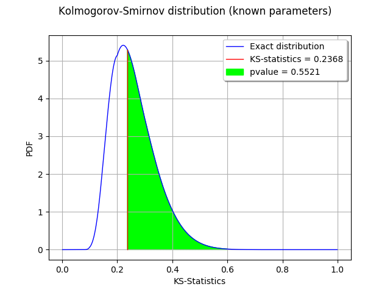

The Kolmogorov-Smirnov p-value¶
In this example, we illustrate the calculation of the Kolmogorov-Smirnov p-value.
We generate a sample from a gaussian distribution.
We create a Uniform distribution with known parameters.
The Kolmogorov-Smirnov statistics is computed and plot on the empirical cumulated distribution function.
We plot the p-value as the area under the part of the curve exceeding the observed statistics.
[1]:
import openturns as ot
We generate a sample from a standard gaussian distribution.
[2]:
dist = ot.Normal()
samplesize = 10
sample = dist.getSample(samplesize)
[3]:
testdistribution = ot.Normal()
result = ot.FittingTest.Kolmogorov(sample, testdistribution, 0.01)
[4]:
pvalue = result.getPValue()
pvalue
[4]:
0.5520956737074482
[5]:
KSstat = result.getStatistic()
KSstat
[5]:
0.23684644362352725
Compute exact Kolmogorov PDF.
Create a function which returns the CDF given the KS distance.
[6]:
def pKolmogorovPy(x):
y=ot.DistFunc_pKolmogorov(samplesize,x[0])
return [y]
[7]:
pKolmogorov = ot.PythonFunction(1,1,pKolmogorovPy)
Create a function which returns the KS PDF given the KS distance: use the gradient method.
[8]:
def kolmogorovPDF(x):
return pKolmogorov.gradient(x)[0,0]
[9]:
def dKolmogorov(x,samplesize):
"""
Compute Kolmogorov PDF for given x.
x : a Sample, the points where the PDF must be evaluated
samplesize : the size of the sample
Reference
Numerical Derivatives in Scilab, Michael Baudin, May 2009
"""
n=x.getSize()
y=ot.Sample(n,1)
for i in range(n):
y[i,0] = kolmogorovPDF(x[i])
return y
[10]:
def linearSample(xmin,xmax,npoints):
'''Returns a sample created from a regular grid
from xmin to xmax with npoints points.'''
step = (xmax-xmin)/(npoints-1)
rg = ot.RegularGrid(xmin, step, npoints)
vertices = rg.getVertices()
return vertices
[11]:
n = 1000 # Number of points in the plot
s = linearSample(0.001,0.999,n)
y = dKolmogorov(s,samplesize)
[12]:
def drawInTheBounds(vLow,vUp,n_test):
'''
Draw the area within the bounds.
'''
palette = ot.Drawable.BuildDefaultPalette(2)
myPaletteColor = palette[1]
polyData = [[vLow[i], vLow[i+1], vUp[i+1], vUp[i]] for i in range(n_test-1)]
polygonList = [ot.Polygon(polyData[i], myPaletteColor, myPaletteColor) for i in range(n_test-1)]
boundsPoly = ot.PolygonArray(polygonList)
return boundsPoly
Create a regular grid starting from the observed KS statistics.
[13]:
nplot = 100
x = linearSample(KSstat,0.6,nplot)
Compute the bounds to fill: the lower vertical bound is zero and the upper vertical bound is the KS PDF.
[14]:
vLow = [[x[i,0],0.] for i in range(nplot)]
vUp = [[x[i,0],pKolmogorov.gradient(x[i])[0,0]] for i in range(nplot)]
[15]:
boundsPoly = drawInTheBounds(vLow,vUp,nplot)
boundsPoly.setLegend("pvalue = %.4f" % (pvalue))
curve = ot.Curve(s,y)
curve.setLegend("Exact distribution")
curveStat = ot.Curve([KSstat,KSstat],[0.,kolmogorovPDF([KSstat])])
curveStat.setColor("red")
curveStat.setLegend("KS-statistics = %.4f" % (KSstat))
graph = ot.Graph('Kolmogorov-Smirnov distribution (known parameters)', 'KS-Statistics', 'PDF', True, 'topright')
graph.setLegends(["Empirical distribution"])
graph.add(curve)
graph.add(curveStat)
graph.add(boundsPoly)
graph.setTitle("Kolmogorov-Smirnov distribution (known parameters)")
graph
[15]:

We observe that the p-value is the area of the curve which corresponds to the KS distances greater than the observed KS statistics.